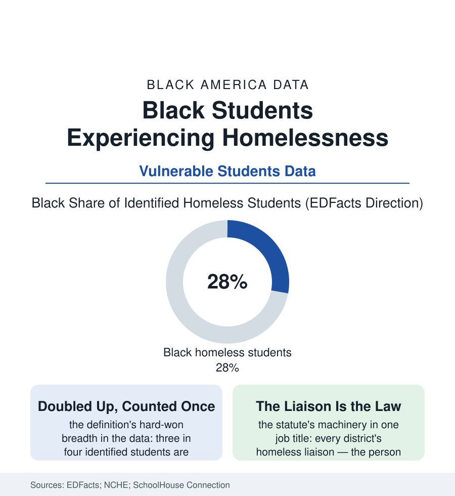

Black Education
No Fixed Address: Black Students in the Homeless Count
More than a million American students have no fixed address — most of them doubled up in somebody else's home — and Black children are counted among them at twice their share. The address file.

The largest homeless population in America wears backpacks. The federal education count identifies well over a million enrolled students without a fixed, regular, adequate nighttime residence — a number the street counts never see, because most of them are children in other people's living rooms — and Black students stand in that count at roughly twice their share of enrollment. This article reads the address file.
The Definition and the Doubled-Up Majority
The education law's definition is deliberately wider than the housing law's, and the difference is the file's first lesson: where the HUD count looks for the literal street and shelter, the McKinney-Vento definition counts the doubled-up child — the family in the aunt's living room, the three households in the two-bedroom of the multigenerational file's crisis form — at roughly three in four of the identified total, the motels and shelters and cars dividing the rest. The Black overrepresentation compounds the housing file's every mechanism into one roster: the eviction file's displaced (the filing's child changing schools mid-lease-year in the mobility data), the rent burden's breaking point, the family file's shocks — job, split, death, the landlord's sale — absorbed unevenly by the kin network until the kin network's own margin fails, the child arriving at the district office with an address that is somebody else's mercy. The identification itself is the system's first service and its first failure in the audit data: the count depends on the family's disclosure to the school (the fear — of the child-welfare file's attention, of the landlord learning the lease is doubled — suppressing it in the interview studies), on the enrollment clerk's one required question, on the liaison's shoe-leather in the motel corridors — the official number understood, by everyone who produces it, as the floor of the true one. The outcomes data then read like the foster file's, for the same reason: mobility's months of progress priced per move, the absenteeism of the child whose commute is a borrowed couch's geography, the graduation rates of the identified cohort running twenty-plus points below the housed in the states that publish them — the address, it turns out, is a school supply.
The Machinery the Statute Builds
McKinney-Vento is, on paper, among the strongest education rights in the federal code — immediate enrollment without the records, the school of origin with transportation owed, the liaison in every district charged with finding and defending the child — and the implementation audits grade it as the foster file's twin: rights funded like suggestions. The liaison of the urban district carries a caseload in the thousands in the staffing data, often as a second duty; the transportation right collides with the bus file's routes and the two districts' fare-splitting; the identification undercount starves the formula that funds the whole apparatus. Where the machinery is staffed, the returns are the file's most legible: the district programs that pair the liaison with the housing authority's family vouchers, the school-based pantries and laundry rooms of the recent facilities data (the washer installed so the child will come — an appliance as an attendance intervention, its sponsors' logic unanswerable), the motel-to-housing pipelines of the family homelessness initiatives. And the community's own infrastructure runs beneath the statute as beneath every file here: the kin network that is simultaneously the crisis's cause of invisibility and its primary responder — the aunt's couch preventing the shelter, the church's benevolence fund paying the motel's week, the grandmother's address on the enrollment form, true and insufficient at once. The count will be taken again next year, by the clerks' one question. What it cannot count is the margin by which the couch held — or the year it didn't.
Reading the Homeless Student Data
The address file is the education section's foundation document: every other intervention assumes a child who sleeps in the same place twice. EDFacts publishes the count each year. The liaisons publish theirs nightly, in the motel parking lots and the doubled-up doorways — where the largest homeless population in America does its homework, when there is a table, and comes to school, overwhelmingly, anyway. Attendance, under those conditions, is not compliance. It is defiance with a backpack.
More in Black Education
Black Educational Attainment: High School Parity, the College Gap
About 89 percent of Black adults hold a high school diploma and one in four holds a bachelor's degree or higher — the attainment ladder, the college completion gap, and the generational trend.
Historically Black Colleges and Universities: Enrollment and Degrees
More than 100 HBCUs enroll roughly 290,000 students and award about one in six Black bachelor's degrees — an outsized share from a small sector. The federal education data.
Black College Enrollment: 2.4 Million Students
About 2.4 million Black students are enrolled in American colleges — nearly two-thirds of them women. The NCES enrollment data by sector, level, and trend.
Source: U.S. Department of Education EDFacts homeless student data; National Center for Homeless Education; SchoolHouse Connection and National Homelessness Law Center research.